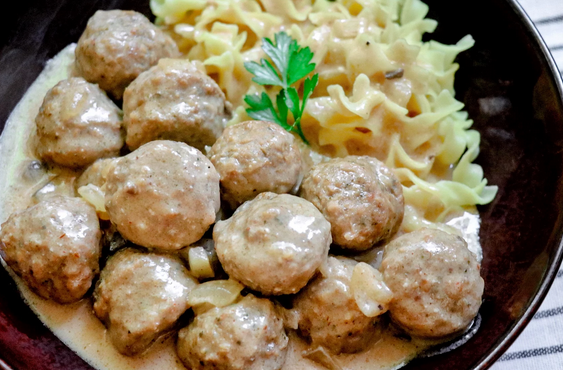

Swedish Meatballs

Description
These make-ahead slow cooker Swedish meatballs are perfect for family meals. For a meal, serve over wide egg noodles. Meatballs can also be served without noodles for an appetizer.
Ingredients
- 2 cups beef broth
- 1 (10.75 ounce) can condensed cream of mushroom soup
- 2 tablespoons steak sauce
- 1 tablespoon Worcestershire sauce
- 1 teaspoon garlic powder
- ½ teaspoon paprika
- ½ teaspoon salt
- ½ teaspoon ground black pepper
- 1 (28 ounce) package frozen cooked meatballs, thawed
- 1 onion, diced
- 1 cup sour cream
Steps
-
Whisk beef broth and mushroom soup together in a slow cooker. Add steak sauce, Worcestershire sauce, garlic powder, paprika, salt, and pepper. Stir in meatballs and onion.
-
Cook on High for 4 hours. Add sour cream, mixing well. Cook until sauce is heated through, about 30 minutes.